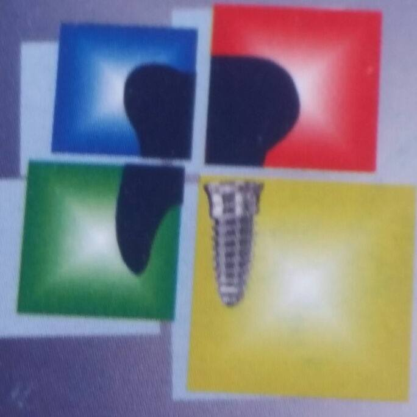
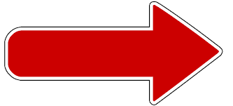

Sistema web responsive de reserva de consultas y gestion de atencion a pacientes. Caso de estudio: clinica dental maldonado
Gutierrez Maldonado Gerald Michael
Tutora: Lic. Lizbeth Jaramillo
Ingenieria de sistemas
Generalidades
Antescedentes
Clinica dental Maldonado
Odontologos

3 Salas de atencion

1 laboratorio protesis dental 9:00 - 12:00/14:30 - 20:00

Conlleva

Por Fechas


Pacientes atendidos por dia de 14 a 17
Año 2014
Tratamientos
Atencion integral adulto - niño
- Para adulto: operatoria, periodoncia, endodoncia, prótesis fija, prótesis removible y cirugía (extracción simple o quirúrgicas)
- Para niño: operatoria, pulpectomia y pulpotomia
Por especialidad
- Ortodoncia fija y removible, cirugia avanzada o estomatologica e implantologia avanzada
Protesis Dental
- Trabajos de puentes, coronas, placas parciales y totales y protesis flexible
Año 2016
Emergencia
Objetivo General
Desarrollar un sistema web responsive de reservas de consultas y gestión de atención a pacientes para coadyuvar en la organización de atención de pacientes.
Objetivos especificos
- Diseñar el modelado de negocio actual en base al análisis de los procesos actuales.
- Diseñar el modelado de negocio alternativo.
- Desarrollar el módulo de gestión de usuarios.
- Desarrollar el módulo de reservas de consultas.
- Desarrollar un módulo de Administración de historial clínico.
- Desarrollar un módulo Administración de trabajos.
- Realizar pruebas al sistema final.
Diseñar el modelado de negocio actual en base al análisis de los procesos actuales
- Recopilar informacion relacionada con el seguimiento de atencion a pacientes.
- Elaborar entrevistas con el personal encargado de los registros de los procesos de reserva de consultas y atencion a pacientes.
- Elaborar el diagrama de flujo que represente el modelado de negocio actual del control de material de stock.
- Realizar la verificacion del modelado de negocio con los usuarios involucrados.
Diseñar el modelado de negocio alternativo.
- Identificar las falencias de los procedimientos manuales que se realizan en la clinica dental
- Elaborar un digrama de flujo el cual refleje el modelado de negocio alternativo de los procesos de registro de historiales clinicos
- Seleccionar la metodologia de desarrollo de Software
- Planificar actividades de desarrollo en base a metodologia
Desarrollar el módulo de gestión de usuarios.
- Seleccionar el lenguaje de programacion y gestor de base de datos
- Realizar analisis de requerimientos para el modulo de usuarios
- Identificar actores y objetivos involucrados en el sistema
- Elaborar los diagramas de casos de uso, de colaboracion y de clases
- Diseñar la base de datos para el modulo de gestion de usuarios
- Codificar modulo de gestion de usuarios
- Realizar pruebas funcionales
Desarrollar el módulo de reservas de consultas.
- Analizar requerimientos para el modulo de reservas
- Identificar actores involucrados
- Elaborar los diagramas de casos de uso, de colaboracion y de clases
- Aumentar tablas del modulo de reserva de consultas
- Codificar reservas de consultas para una mejor atencion de pacientes
- Generar alertas para notificar al doctor tratamiento por especialidad
- Realizar pruebas funcionales
Desarrollar un módulo de Administración de historial clínico.
- Realizar analisis de requerimientos para el modulo de trabajos
- Identificar actores y objetviso involucrados
- Elaborar los diagramas de casos de uso, de colaboracion y de clases
- Aumentar tablas del modulo de administracion de historial clinico
- Implementar el modulo de administracion de historial clinico
- Realizar pruebas funcionales
Desarrollar un módulo Administración de trabajos.
- Realizar analisis de requerimientos para el modulo de trabajos
- Identificar tipos de trabajos que se realizan en la clinica dental
- Elaborar los diagramas de casos de uso, de colaboracion y de clases
- Aumentar tablas del modulo de administracion de trabajos a la base de datos
- Codificar el registro de tratamientos y de protsis dental
Realizar pruebas al sistema final.
- Elaborar escenarios de pruebas
- Aplicar las pruebas seleccionadas
- Documentar los resultados obtenidos
Hipotesis
El desarrollo de un sistema web responsive de reservas de consultas y gestion de atencion a pacientes permitira reducir el tiempo en la busqueda de historiales clinicos y libros de cuentas, reducir el riesgo de perdida de informacion y reducir el riesgo de no atencion de pacientes.